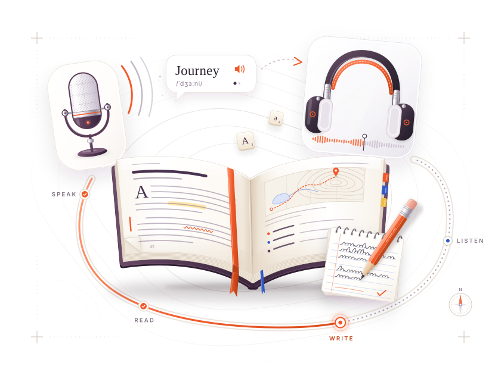

Students follow a deliberate route.
Published lessons, enrolled cohorts, accessible media, practice and feedback form one continuous learning rhythm rather than a wall of course cards.
English learning, precisely composed
Thoughtful lessons. Purposeful practice. A clearer understanding of what comes next—for learners and the people who teach them.

Explore our courses
Start with the IELTS pilot. More courses are planned.
For learners and the people behind them
Focused study for students. Thoughtful teaching tools. Clear control for the institutions that bring them together.
Published lessons, enrolled cohorts, accessible media, practice and feedback form one continuous learning rhythm rather than a wall of course cards.
Future teacher work belongs in explicit, administrator-created slots—without changing protected course structure, branding or core content.
Administrators control course identity, structure, publishing, permissions and protected materials through an auditable content workbench.
Understand what each part asks you to do, what evidence it collects, and how to approach instructions precisely.
Current pilot
The IELTS Preparation (B2) pilot connects module navigation, editorial teaching, an exam strategy, private resources and accessible practice in one composed page.
“Treat instructions as part of the question.” The route teaches students to notice word and number limits before they begin looking for an answer.
A governed block system
Text can stay quiet. Media can widen. Practice can become precise. Administrators compose from approved blocks while the platform protects structure and accessibility.
Exam strategy · Evidence lens
A completion task is partly a comprehension task and partly a constraint task. Identify the source, the word limit, and whether a number is allowed before scanning.
 Pause. Notice the instruction. Then return to the evidence.
Pause. Notice the instruction. Then return to the evidence.Course and workspace access is designed around authenticated roles and hierarchy checks.
Official course files are designed for private storage and authorised delivery.
Keyboard interaction, focus, reduced motion and clear non-colour states are treated as foundations.
A platform with room to grow